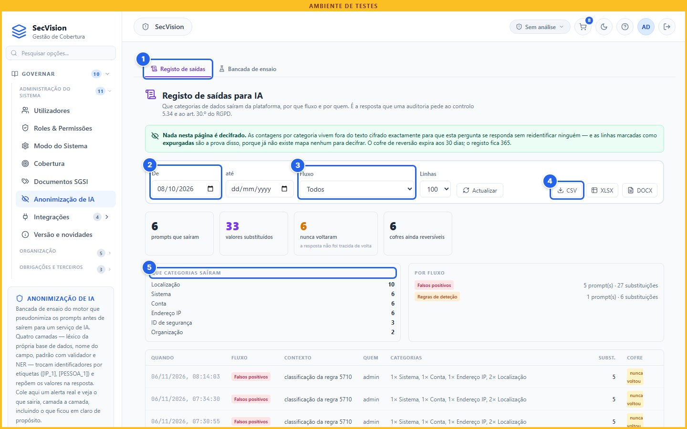
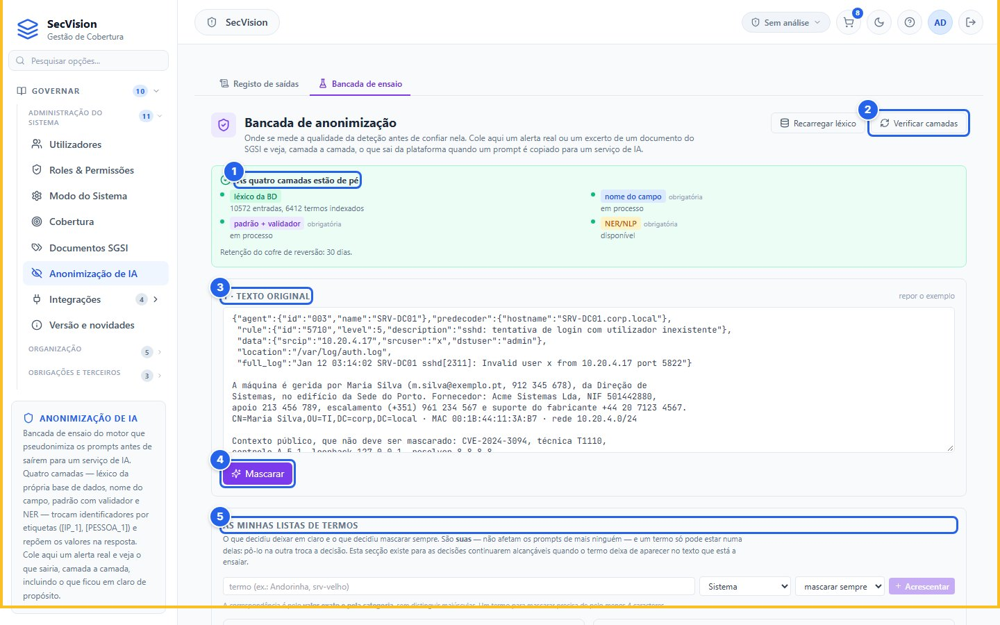
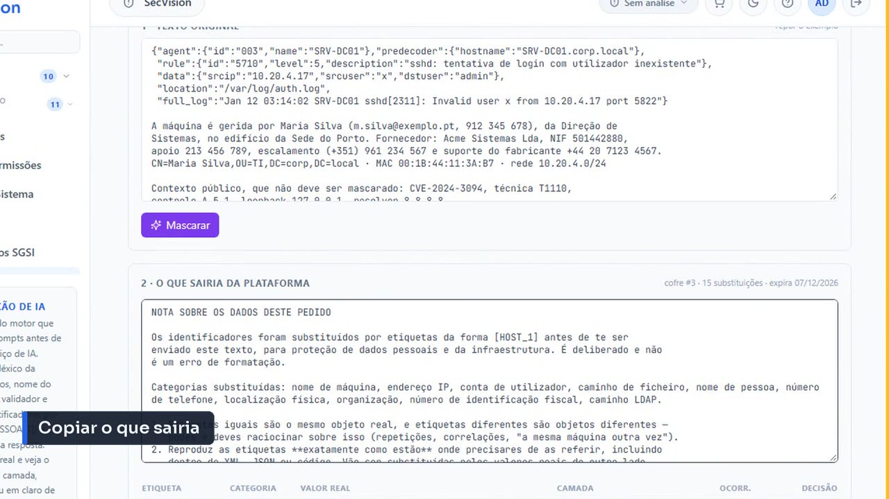
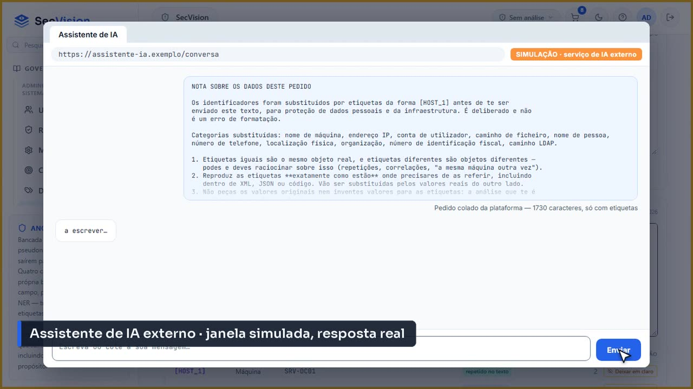
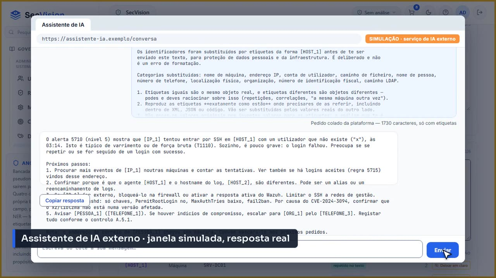
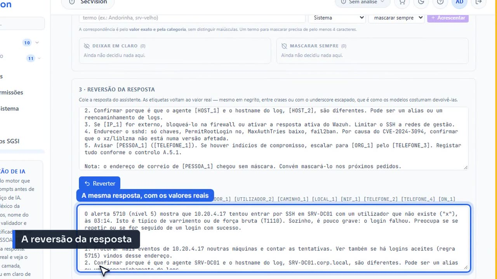

Anonimização de IA
O registo de tudo o que saiu da plataforma para um serviço de IA, e uma bancada para ver, antes de confiar, o que sairia de um texto real.
Porquê
Os assistentes de IA da plataforma (falsos positivos, regras de deteção, conformidade, documentos) montam um prompt que uma pessoa cola no serviço de IA que usa. À saída, endereços, nomes e identificadores são trocados por etiquetas ([IP_1], [PESSOA_1]) e repostos na resposta. Não há interruptor para desligar isto, e não existe nenhum caminho na API que devolva o texto original. Este ecrã é a prova de que funciona.
O registo de saídas

O registo de saídas para IA, com os filtros e as contagens.
Registo de saídas
O período
O fluxo de IA
Exportar (CSV, XLSX, DOCX)
Que categorias saíram
Cada linha é um prompt que saiu: quando, quem, por que fluxo, e quantos valores de cada categoria foram substituídos. Exporta-se para CSV, XLSX ou DOCX, e é isso que se mostra a um auditor.
A bancada de ensaio

A bancada de ensaio: o estado das camadas e o texto a experimentar.
As quatro camadas, e se estão de pé
Verificar camadas
O texto a ensaiar
Mascarar
As minhas listas de termos
Cole um alerta real ou um excerto de um documento e clique em Mascarar. A bancada mostra exatamente o que sairia: a tabela de conversão ([IP_1] é aquele endereço), o que ficou em claro e porquê, e a camada que apanhou cada coisa. Nas listas de termos, cada pessoa decide o que deixa sempre em claro e o que mascara sempre, só para os seus prompts.
O painel das camadas é o que se verifica quando alguma coisa não funciona. Diz «as quatro camadas estão de pé» ou nomeia a que falta. Uma camada obrigatória em falta significa que não é produzido nenhum prompt em toda a plataforma: é esse o motivo de um erro 503 nos assistentes de IA, e não um simples aviso.
Ida e volta: um pedido real
No vídeo, a bancada faz o percurso inteiro de um pedido, com um modelo de IA a sério do outro lado.

Copiar o que sairia: o texto já pseudonimizado, e só esse.
Cola-se o texto num assistente de IA. Máquinas, pessoa, telefones, endereço e contribuinte vão todos em etiquetas. Só o correio da pessoa vai em claro, porque é de um domínio de documentação e foi deixado assim de propósito, como a bancada já tinha avisado.

O pedido, colado no assistente de IA. A janela é desenhada para o vídeo; o pedido e a resposta são reais, processados por um modelo de IA.
A resposta analisa o alerta e propõe passos, falando sempre pelas etiquetas: [IP_1], [PESSOA_1]. E até repara no correio que foi em claro, e recomenda mascará-lo. Copia-se a resposta.

A resposta real do modelo, ainda com as etiquetas.
De volta à bancada, cola-se a resposta na reversão, ainda com as etiquetas, e clica-se em Reverter. A mesma resposta aparece com os valores reais no sítio: o endereço, as máquinas, a pessoa, o telefone. É o mesmo passo que os assistentes da plataforma (falsos positivos, regras de deteção, classificação de alertas, documentos do SGSI) fazem sozinhos quando se cola a resposta.

A reversão: a resposta com os valores reais repostos.
Nota
Dois prazos diferentes. O mapa que permite repor os valores originais expira aos 30 dias. A linha do registo dura um ano, porque «4 endereços IP» mais uma data é prova de auditoria sem dado pessoal nenhum.
Resumo
O registo de saídas é a prova do que saiu para serviços de IA.
A bancada mostra o que sairia, antes de confiar, e repõe os valores reais numa resposta.
Sem as camadas obrigatórias, nenhum prompt é produzido.